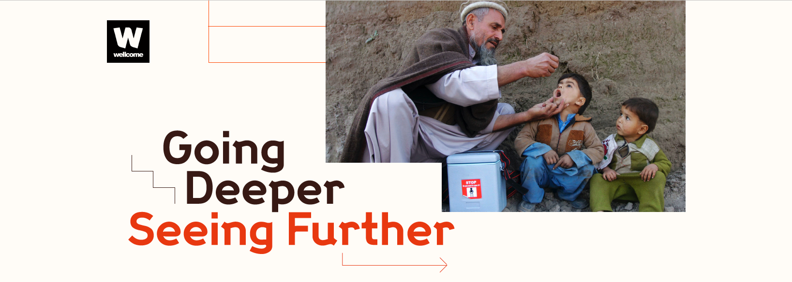

Trust in science plays a huge role in how people interpret and adopt scientific findings.
We have explored the findings from the Wellcome Global Monitor 2018 and developed four lenses, to help make different aspects of trust visible and actionable for you.
Going Deeper
Through the lenses...
Seeing Further
Use the lenses to find out